Postulación, aceptación de los documentos legales, procedimiento de objeciones con plazos legales y configuración del proceso
Portal del postulante · Panel interno (secretaría, revisión, comité, Consejo, visualizadores y administración)
Versión 4 · Octubre de 2026 · Capturas tomadas en un entorno de prueba con datos ficticios.
Contenido
Cómo funciona el proceso
Postulante: crear la cuenta y postularse
Postulante: aceptar una versión nueva de los documentos
Postulante: corregir un expediente devuelto
Postulante: responder una objeción admitida (descargo)
Revisión documental: devolver para corrección
Visualizador: presentar una objeción
Comité: admisión, descargo, comprobación y decisión
Secretaría: descargos de postulantes sin cuenta
Consejo (evaluadores): objeciones declaradas con lugar
Superadministración: configuración del proceso y calendario
Superadministración: Términos y Condiciones y Política de Privacidad
Administración: usuarios, Consejo y cuentas de postulantes
Recuperar la contraseña (todos los usuarios)
Quién puede hacer qué
Novedades de la versión 4.
Al crear la cuenta, el postulante acepta por separado los Términos y Condiciones y la Política de Privacidad, que puede leer en una ventana sin salir del registro.
El registro y cada inicio de sesión del portal incluyen una verificación de seguridad (captcha).
Cuando se publica una versión nueva de esos documentos, el postulante la acepta al volver a ingresar (sección 3).
El superadministrador publica y consulta las versiones desde «Documentos legales» (sección 12).
El calendario del proceso se configura en tres pasos, con calendarios propios para la fecha de inicio y los feriados (sección 11).
1. Cómo funciona el proceso
Hay dos puertas de entrada:
Portal del postulante: el aspirante crea su cuenta, registra su postulación, carga los documentos, sigue su etapa, corrige lo que le pidan y responde las objeciones admitidas.
Panel interno: lo usa el personal según su rol.
Recorrido de un expediente:
Postulaciones. El postulante (o la secretaría) registra el expediente y lo envía a revisión. Al cerrar las postulaciones ya no se registran ni se envían expedientes nuevos.
Revisión documental: aprueba o devuelve para corrección.
Evaluación por el Consejo (los evaluadores activos) y ranking interno.
Objeciones, según los artículos 71 y 72 de la Ley Orgánica del Tribunal Supremo de Justicia:
1 Lapso de objeciones (15 días)2 Admisión por el comité (8 días)3 Descargo del postulado (3 días)4 Comprobación (hasta 5 días)5 Decisión: con lugar o sin lugar
Durante el lapso y la admisión, sólo el comité ve las objeciones. Si el comité la admite, el postulado es notificado y responde. Si la declara con lugar, pasa al Consejo, que declara la inelegibilidad (lo excluye del ranking interno) o baja su puntaje. Si la declara sin lugar, se ratifica su elegibilidad.
Cada pronunciamiento del comité queda en un auto en PDF, numerado (por ejemplo CIVIS-AUTO-2026-0008), que se notifica por correo y no se puede modificar.
Confidencialidad. El postulante y la secretaría nunca ven quién presentó una objeción, ni siquiera en los autos y la copia de la denuncia que reciben. Sólo el comité y el Consejo ven esa identidad, y cada consulta queda registrada en la bitácora.
2. Postulante: crear la cuenta y postularse
Postulante Entre al portal de postulación y pulse «Créela aquí».
Escriba sus nombres, apellidos y correo, y una contraseña de al menos 12 caracteres con mayúscula, minúscula y un número.
Marque las dos casillas: «He leído y acepto los Términos y Condiciones» y «He leído y acepto la Política de Privacidad». Son obligatorias y se guardan por separado. Pulse el nombre de cada documento para leerlo en una ventana; ciérrela con «Cerrar».
Espere a que la verificación de seguridad muestre la marca verde y pulse «Crear cuenta».
Le llega al correo un código de 6 dígitos que vence en 10 minutos. Escríbalo y pulse «Confirmar correo». Si no le llegó, use «Enviar otro código».
Ingrese con su correo y contraseña. La verificación de seguridad también aparece en cada ingreso.
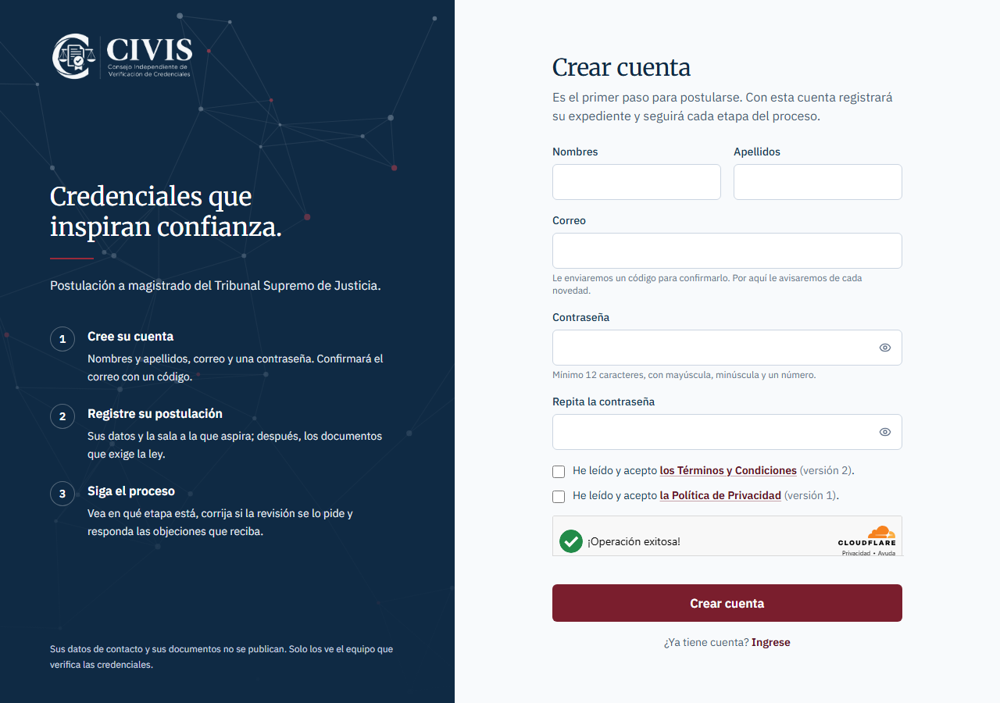
Crear la cuenta: datos, aceptación de los dos documentos y verificación de seguridad
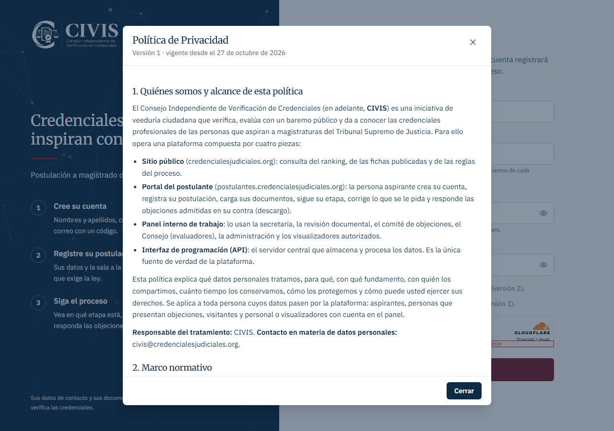
Cada documento se lee en una ventana, con su versión y la fecha desde la que rige
Sin las dos casillas no hay registro. Si falta alguna, el formulario la señala y no crea la cuenta. Queda registrado qué versión aceptó, la fecha y la hora.
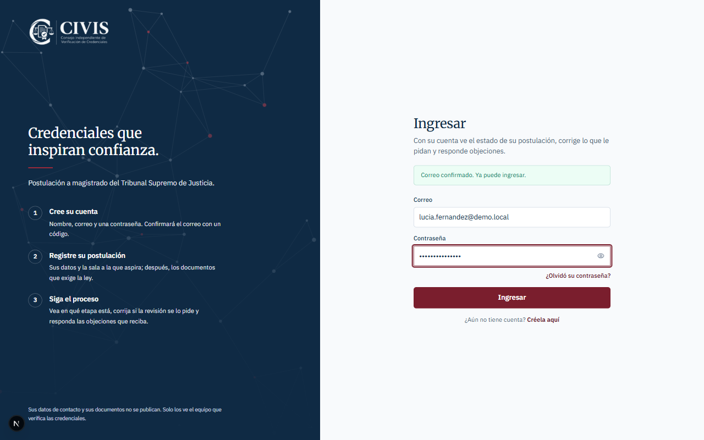
Ingreso al portal con la verificación de seguridad
Registrar la postulación
La primera vez verá «Registrar mi postulación». Complete la cédula, la sala a la que aspira y un teléfono venezolano.
Pulse «Registrar postulación». Se crea su expediente (por ejemplo, EXP-0009).
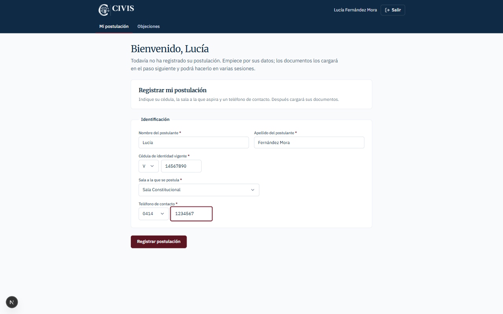
Datos de la postulación
Cargar los documentos y enviar a revisión
Elija un documento, adjunte el PDF o la imagen y pulse «Guardar documento». Puede hacerlo en varias sesiones.
Cuando termine, pulse «Enviar a revisión» y confirme.
Arriba verá siempre la etapa actual. Mientras esté en revisión o evaluación no podrá cambiar datos ni documentos.
Cierre de postulaciones. Cuando el periodo se cierra, el portal ya no permite registrar una postulación ni enviarla por primera vez. Si su expediente fue devuelto por la revisión, sí puede corregirlo y reenviarlo.
3. Postulante: aceptar una versión nueva de los documentos
Postulante Si se publica una versión nueva de los Términos y Condiciones o de la Política de Privacidad, al ingresar verá la pantalla «Documentos actualizados» antes de seguir con su postulación.
Lea qué cambió en el recuadro del documento («Qué cambió»).
Pulse el nombre del documento para leer el texto completo en la ventana.
Marque la casilla de aceptación y pulse «Aceptar y continuar». Pasará a «Mi postulación».
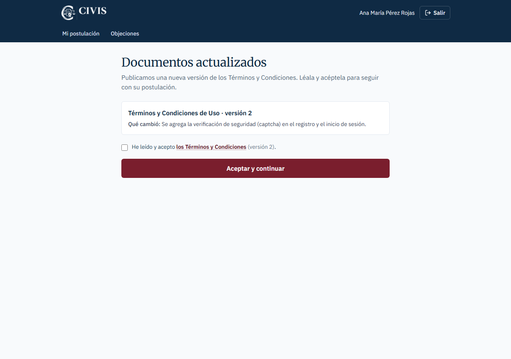
Documentos actualizados: sólo aparecen las versiones que le faltan por aceptar
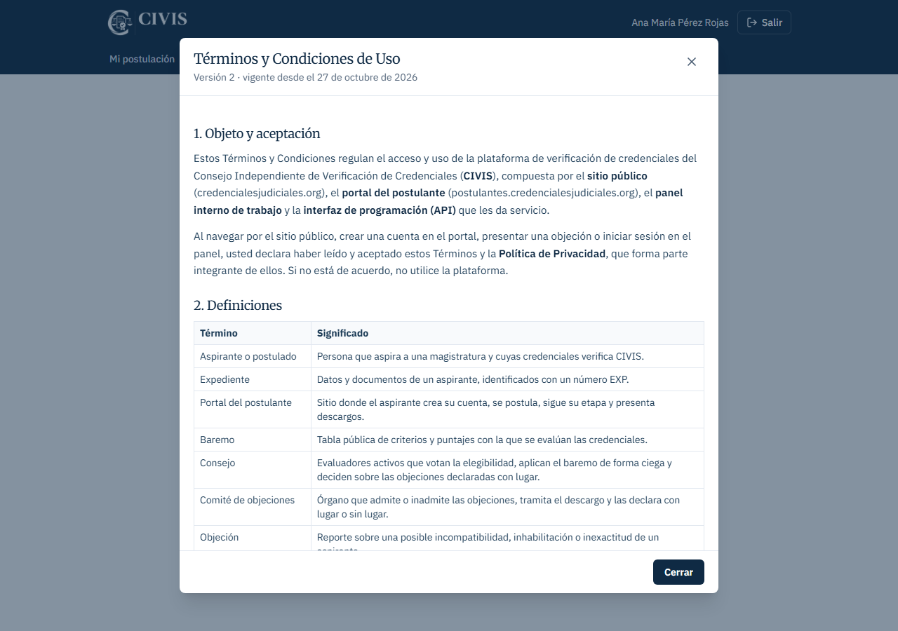
Lectura de la versión nueva antes de aceptarla
Los descargos no esperan. Mientras no acepte, no puede modificar su postulación ni sus documentos. La sección «Objeciones» sigue disponible para que pueda presentar un descargo dentro de su plazo.
4. Postulante: corregir un expediente devuelto
Si la revisión documental encuentra algo que corregir, le devuelve el expediente con un motivo. Le llega un correo y, al ingresar, verá el aviso «La revisión le pide corregir su expediente» con el motivo exacto.
Use «Corregir mis datos» si hay que cambiar nombres, apellidos, sala o teléfono. La cédula no se puede cambiar.
Cargue o sustituya los documentos señalados.
Pulse «Reenviar a revisión» y confirme.
La secretaría también puede hacer estas correcciones desde el panel.
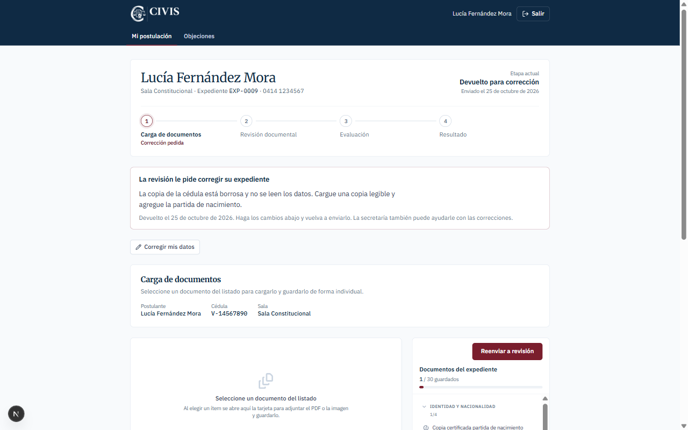
Expediente devuelto con el motivo de la revisión
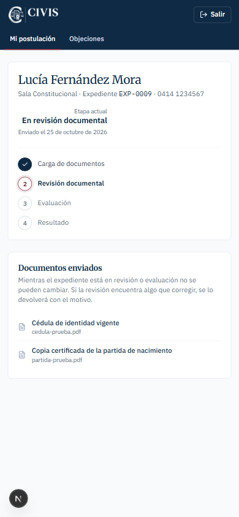
El portal también se usa desde el teléfono
5. Postulante: responder una objeción admitida (descargo)
Usted sólo se entera de una objeción cuando el comité la admite. En ese momento le llega un correo de notificación con dos PDF adjuntos: el auto de admisión y la denuncia (sin la identidad de quien objetó), y el enlace para responder.
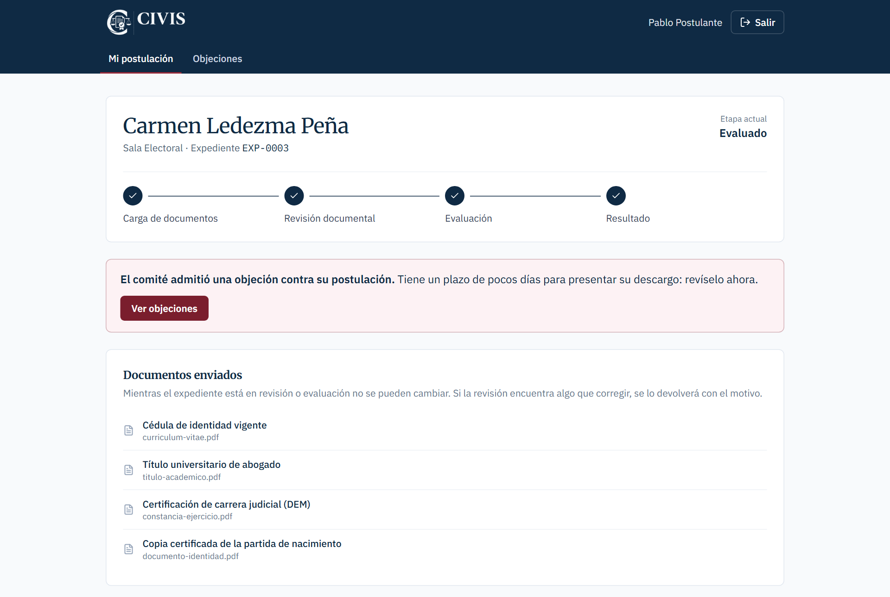
Aviso en «Mi postulación»: objeción admitida
Abra «Objeciones» y la objeción. Verá las causales, los hechos, la evidencia, el auto de admisión y el plazo con la fecha y hora en que vence.
En «Presentar mi descargo», escriba un título y una descripción y, si quiere, adjunte un PDF o una imagen de prueba.
Pulse «Revisar y presentar» y luego «Confirmar y presentar». El descargo no se puede modificar después.
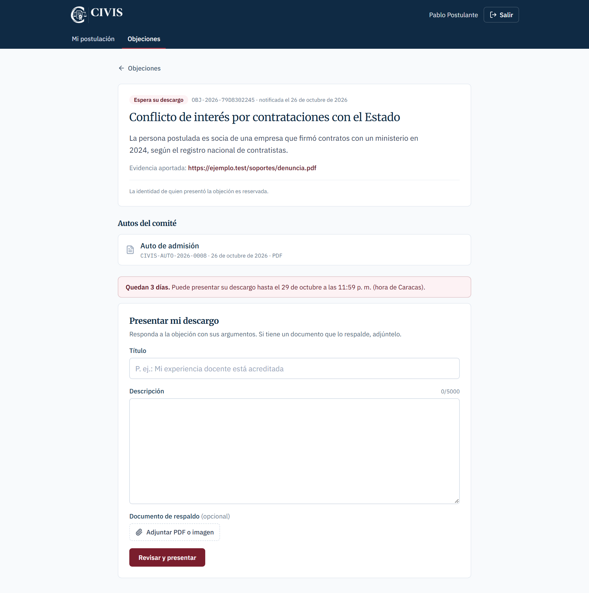
Objeción admitida: auto, plazo y formulario de descargo
Plazo de 3 días continuos. Corre desde la notificación y vence a las 11:59 p. m. (hora de Caracas) del tercer día. Si vence sin descargo, el formulario se cierra, le llega un aviso «sin descargos» y el comité decide con lo que conste en el expediente.
La decisión
Cuando el comité decide, le llega otro correo con el auto de decisión. En la objeción verá si fue con lugar (pasa al Consejo de evaluadores) o sin lugar (se ratifica su elegibilidad), con todos los autos para descargar.
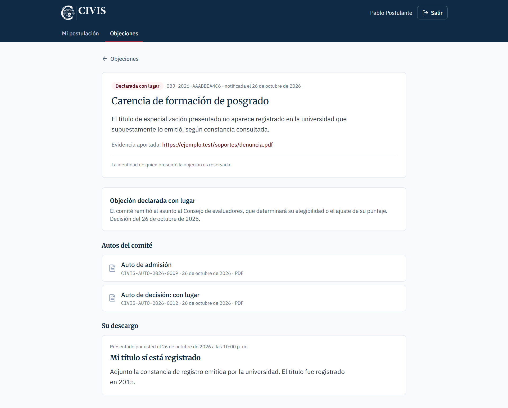
Objeción decidida: decisión, autos y su descargo
6. Revisión documental: devolver para corrección
Revisor En «Revisión documental» abra el expediente. Si falta algo o algo está mal:
Pulse «Devolver para corrección».
Escriba el motivo (mínimo 10 caracteres). Lo verá la secretaría y, si tiene cuenta, el postulante, que además lo recibe por correo.
Pulse «Confirmar devolución».
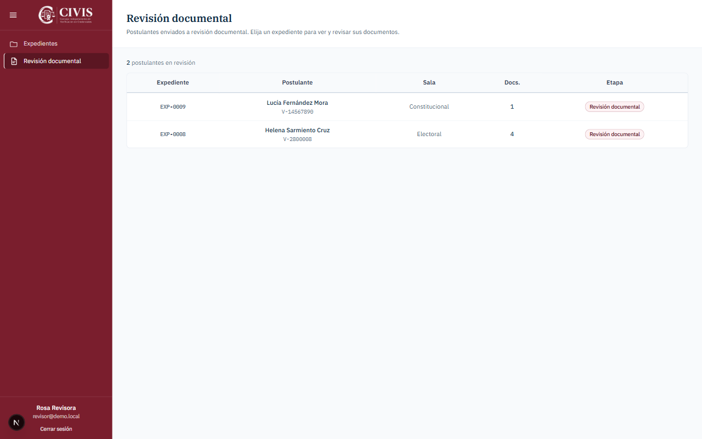
Cola de revisión documental
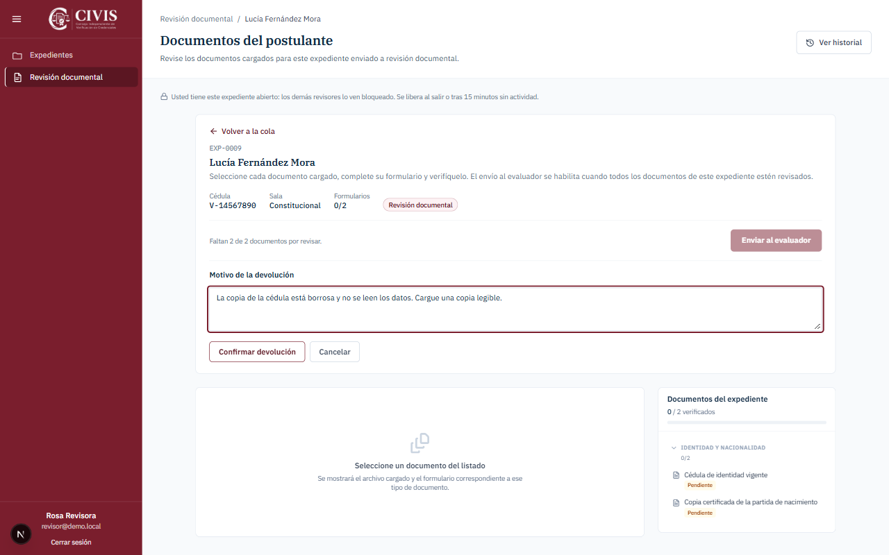
Motivo de la devolución
7. Visualizador: presentar una objeción
Visualizador Sólo puede objetar mientras está abierto el lapso de objeciones (interruptor «Objeciones de los visualizadores»). Si está cerrado, el botón «Objetar» no aparece.
En «Ranking interno», pulse «Objetar» en la fila del postulante.
Escriba su cédula, marque las causales, describa los hechos (mínimo 50 caracteres) y pegue el enlace a las pruebas.
Pulse «Presentar objeción» y confirme. Recibirá el acuse con el PDF de la denuncia.
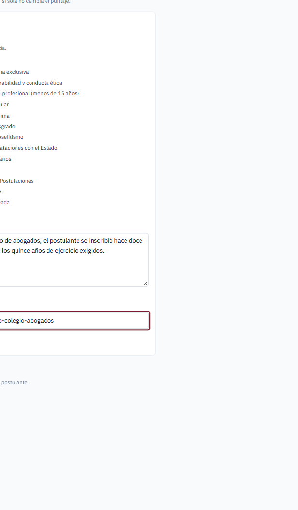
Formulario de objeción del visualizador
La objeción llega sólo al comité. Usted recibirá por correo el auto de inadmisión, o el auto de decisión final (con lugar o sin lugar).
8. Comité: admisión, descargo, comprobación y decisión
Comité Toda objeción llega a «Comité», organizada en cuatro pestañas. Arriba se recuerda el plazo de admisión según el calendario del proceso.
Pestaña
Qué contiene
Por admitir
Objeciones recibidas en el lapso. Sólo el comité las ve.
En descargo
Admitidas y notificadas; muestra cuánto le queda al postulado para responder.
Por decidir
Con descargo, o «sin descargos» si venció el plazo. Corre la comprobación.
Decididas
Inadmitidas, con lugar (en el Consejo) y sin lugar.
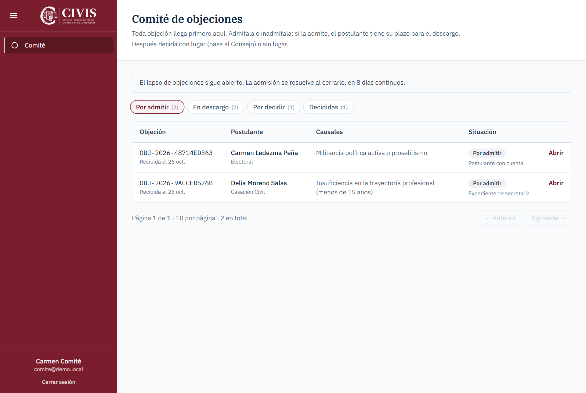
Bandeja del comité
Admitir o inadmitir
Pulse «Abrir». Verá la objeción y, aparte, quién objeta (dato reservado).
Pulse «Admitir» si trae prueba y se refiere a requisitos de elegibilidad; si no, «Inadmitir».
Si quiere, escriba consideraciones adicionales: el auto ya trae su fundamentación completa y lo que escriba se añade.
Confirme. El sistema dicta el auto en PDF y lo notifica:
Admitida: al postulado (o a la secretaría si no tiene cuenta), con el auto y la denuncia. Empieza su plazo de descargo.
Inadmitida: sólo a quien objetó. El postulado nunca la verá.
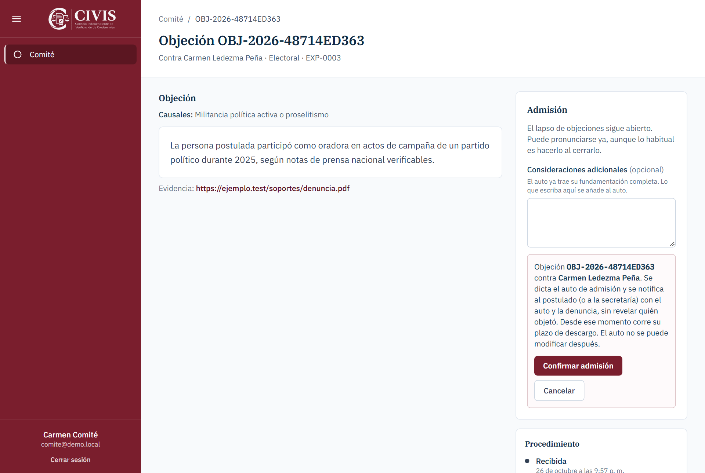
Admisión con confirmación
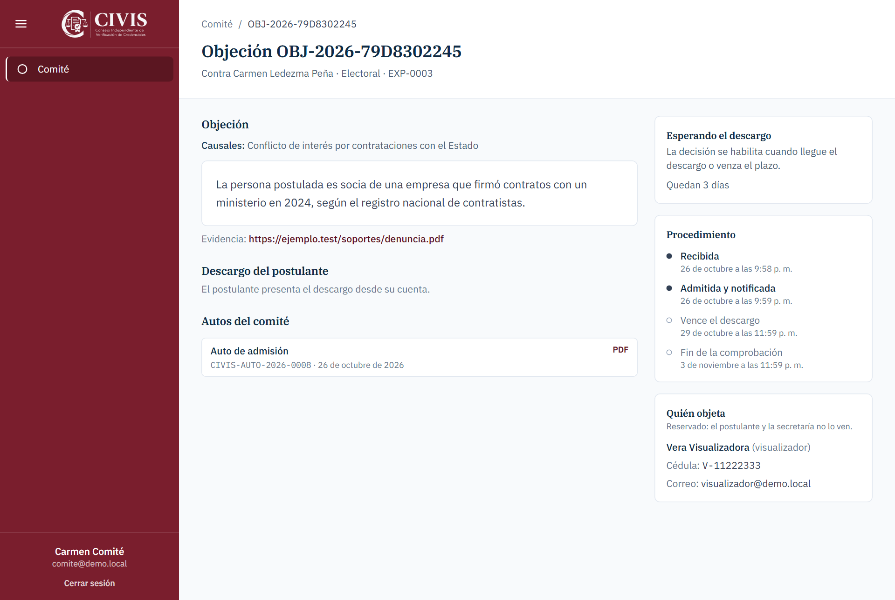
Admitida: el comité espera el descargo y ve el plazo y la línea de tiempo
Comprobación y decisión final
Con el descargo, o vencido el plazo sin él, la objeción pasa a «Por decidir». Si el plazo vence sin respuesta, el sistema la marca «Sin descargos» y avisa al postulado y al comité. Use el periodo de comprobación (hasta 5 días) para pedir informes o verificar datos ante órganos públicos o privados.
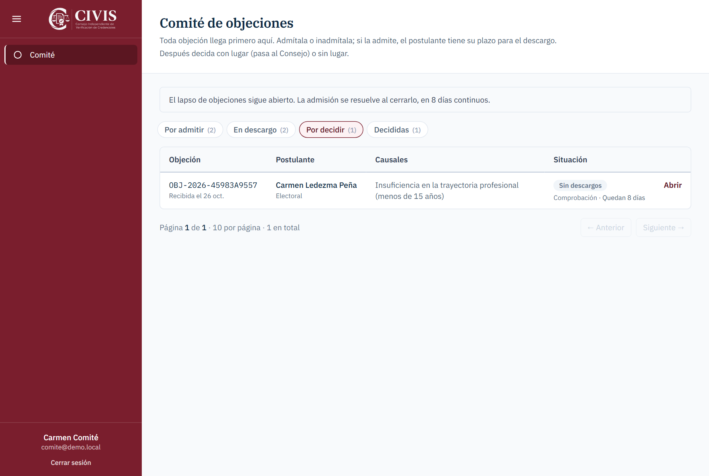
Objeciones por decidir: con descargo o sin descargos
Abra la objeción y pulse «Con lugar» o «Sin lugar».
Agregue, si quiere, sus consideraciones y confirme.
Con lugar: se dicta el auto y la objeción pasa al Consejo. Sin lugar: se dicta el auto que ratifica la elegibilidad. En ambos casos se notifica al postulado y a quien objetó.
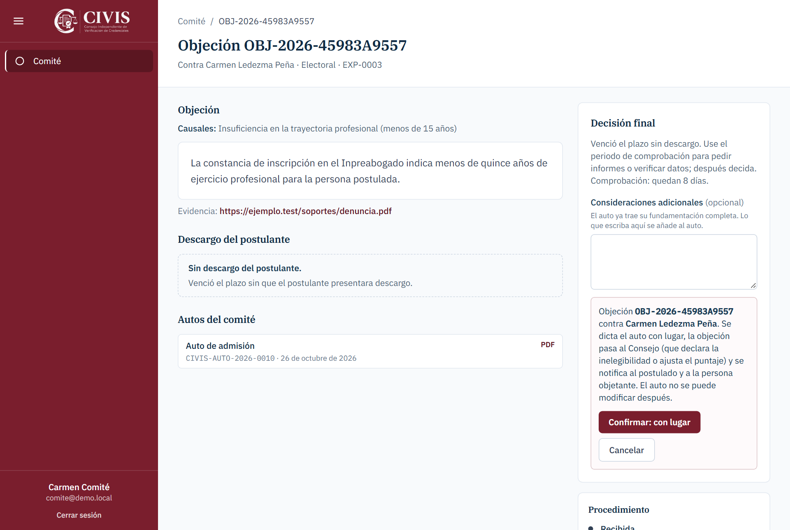
Decisión final de una objeción sin descargos
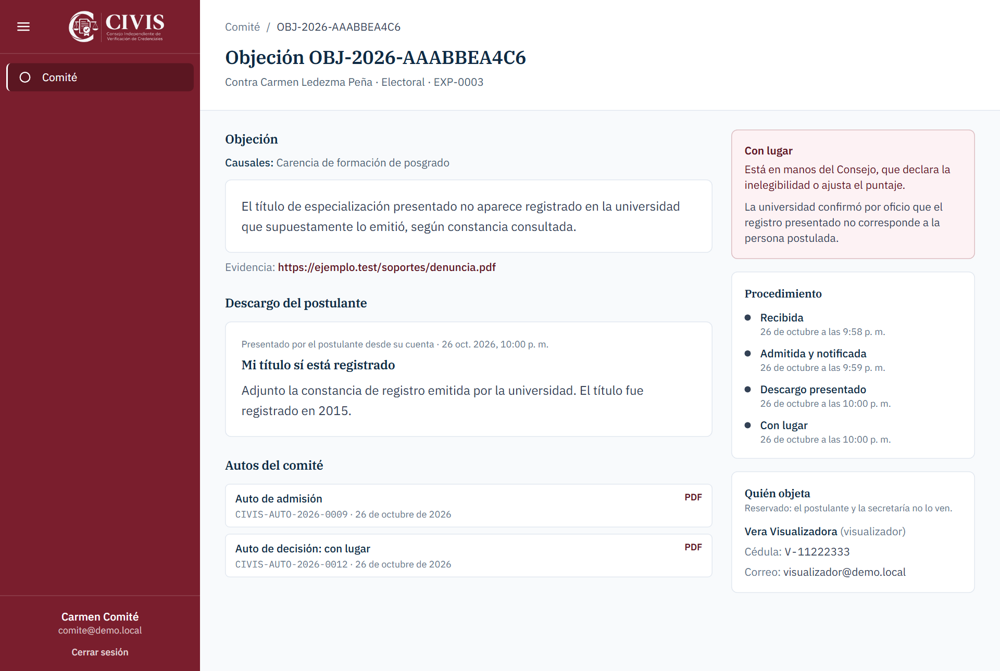
Objeción declarada con lugar, con sus autos
Los autos no se modifican. Se generan una sola vez, se guardan con su huella digital y quedan disponibles para descargar en el comité, la secretaría, el Consejo y el portal del postulante (el de inadmisión, sólo en el comité).
9. Secretaría: descargos de postulantes sin cuenta
Secretaría Si el expediente lo dio de alta la secretaría y el postulante no tiene cuenta, la notificación de admisión llega al correo de la secretaría con el auto y la denuncia. En la ficha del expediente aparece «Objeciones y descargos», sólo con las objeciones ya admitidas.
Contacte al postulante, entréguele el auto y la denuncia. Tampoco aquí se ve quién objetó.
Antes de que venza el plazo, escriba el título y la descripción con lo que responde el postulante y, si hay, adjunte el documento.
Pulse «Cargar descargo» y confirme. Vencido el plazo, el formulario se cierra.
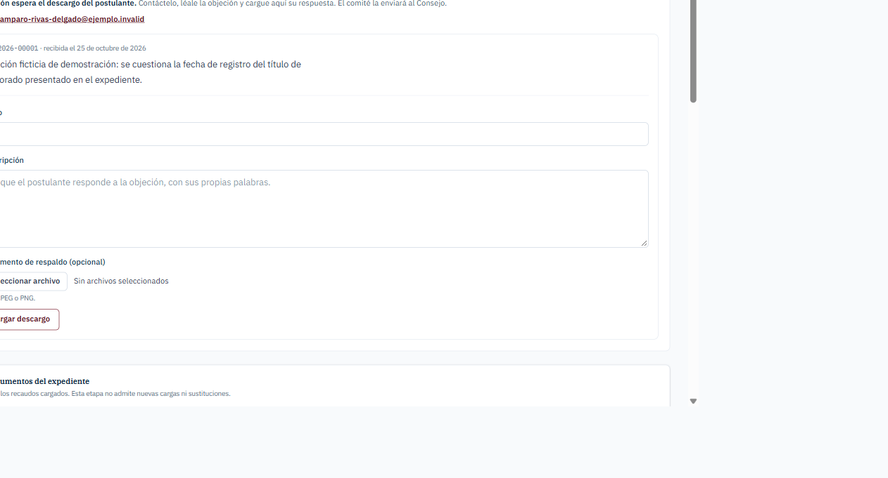
Objeción admitida con su plazo y su auto, lista para cargar el descargo
Postulaciones cerradas. Con el periodo cerrado, «Registrar postulante» muestra un aviso y no permite crear expedientes. Los expedientes devueltos sí se corrigen y reenvían.
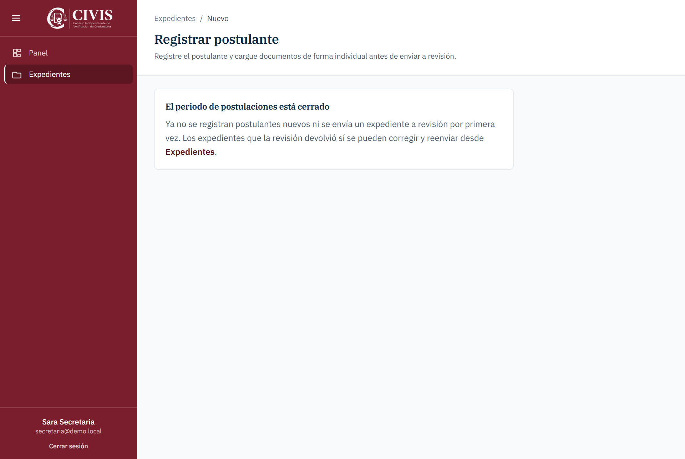
Registro de postulantes con el periodo cerrado
10. Consejo (evaluadores): objeciones declaradas con lugar
EvaluadorAdministrador En «Objeciones» sólo aparecen las objeciones que el comité declaró con lugar. Las demás no se muestran.
En «Ver objeciones» se lee cada objeción con el descargo del postulado (o el aviso de que venció sin él), las consideraciones del comité y el auto con lugar en PDF.
Con eso, el Consejo declara la inelegibilidad (el postulado sale del ranking interno de inmediato) o ajusta el puntaje, con la ronda de objeción como siempre.
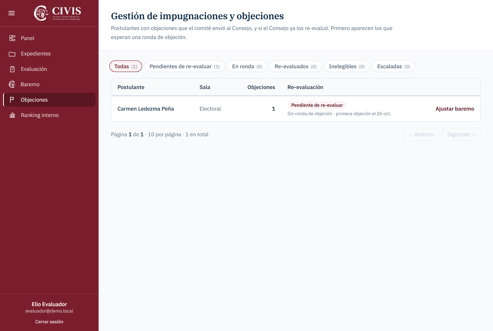
Bandeja del Consejo
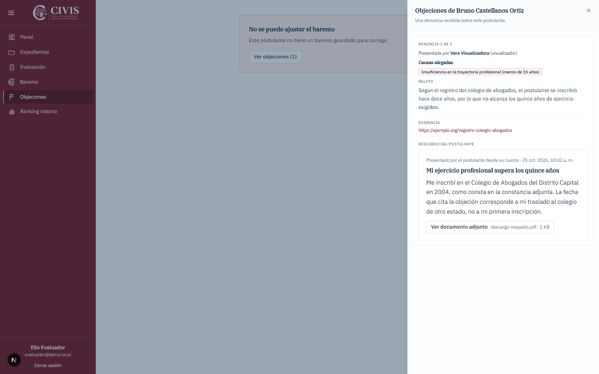
El Consejo ve la objeción, el descargo y el auto con lugar
11. Superadministración: configuración del proceso y calendario
Superadministrador Todos los interruptores del proceso están en «Configuración del proceso»:
Interruptor
Qué hace
Postulaciones cerradas
Ni la secretaría ni el portal registran expedientes ni hacen un primer envío. Pide confirmación y calcula el calendario.
Objeciones de los visualizadores
Abre o cierra el lapso de objeciones desde el ranking interno (el administrador también lo maneja desde «Ranking interno»).
Objeciones públicas en la landing
Abre las objeciones a la ciudadanía desde el sitio público.
«Actualizar en el ranking público» para admin y evaluadores
Les permite llevar al sitio público la nota re-evaluada de un postulante ya publicado.
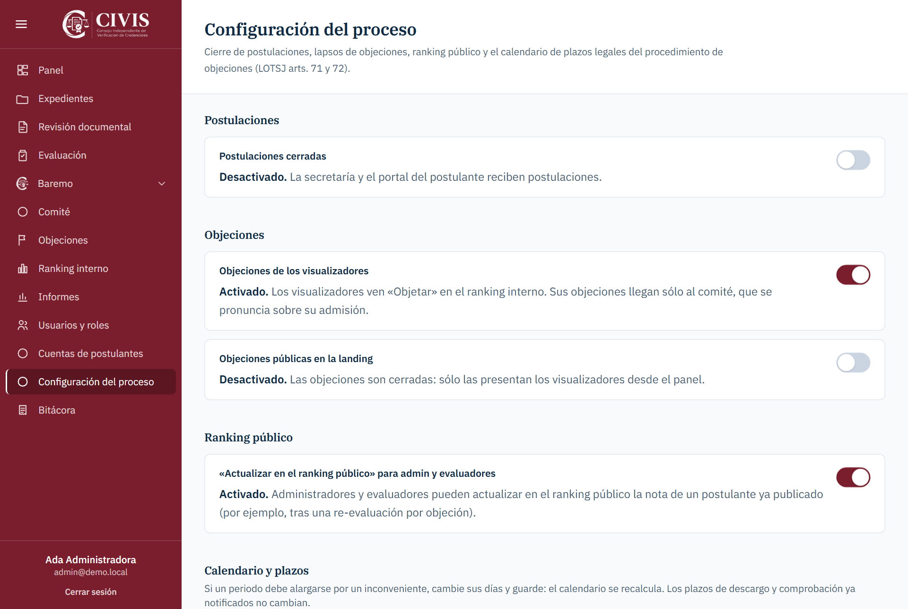
Configuración del proceso
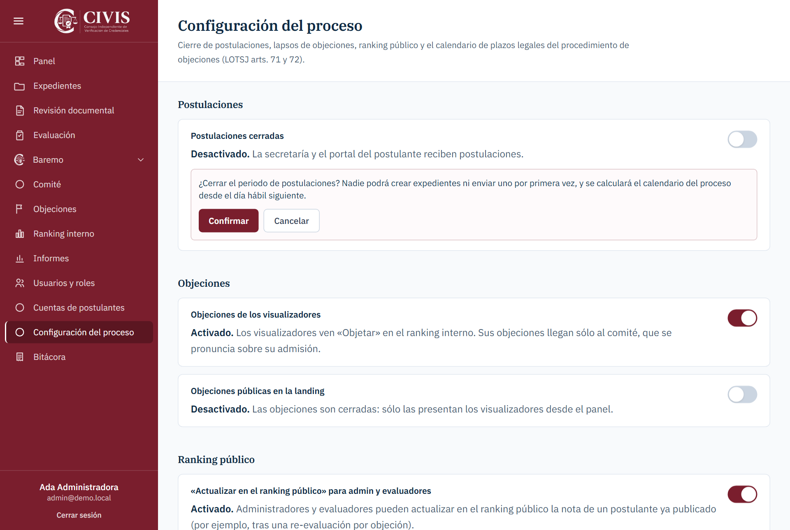
Cerrar las postulaciones pide confirmación
Calendario y plazos
El calendario se arma en tres pasos. A la derecha, «Así queda el calendario» muestra al momento cada periodo con su color: lapso de objeciones, admisión, descargos y comprobación. Los feriados llevan un punto vino.
¿Cuándo empieza el lapso de objeciones?
Automático: el día hábil siguiente al cierre de postulaciones.
Elegir una fecha: por ejemplo, el día de publicación de la nómina. Se abre un calendario; los fines de semana se ven atenuados y los feriados subrayados en vino.
¿Cuántos días dura cada etapa? Use − y + para alargar o acortar un periodo. Cada etapa recuerda lo que indica la ley; si cambia alguna, aparece «Usar los plazos de ley» para volver a los valores legales. El lapso se cuenta en días Hábiles o Continuos (el art. 71 habla de días continuos).
Feriados. Toque un día del calendario para marcarlo o quitarlo como feriado. Debajo aparecen agrupados por año; la × quita uno y «Feriados nacionales» restablece la lista oficial. Sólo cuentan cuando el lapso va en días hábiles.
Al terminar, pulse «Guardar configuración». Los plazos de descargo y comprobación de las objeciones ya notificadas no cambian.
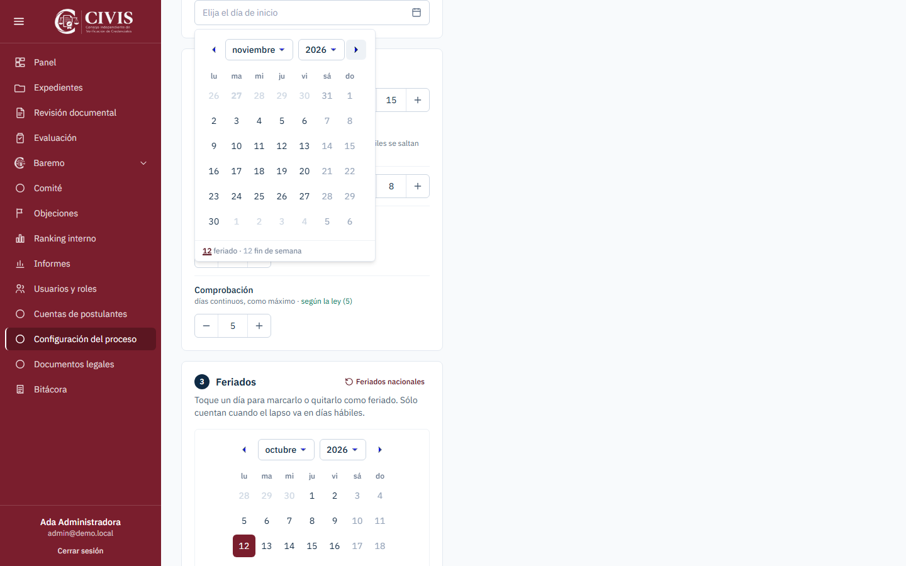
Paso 1: elegir el día de inicio del lapso
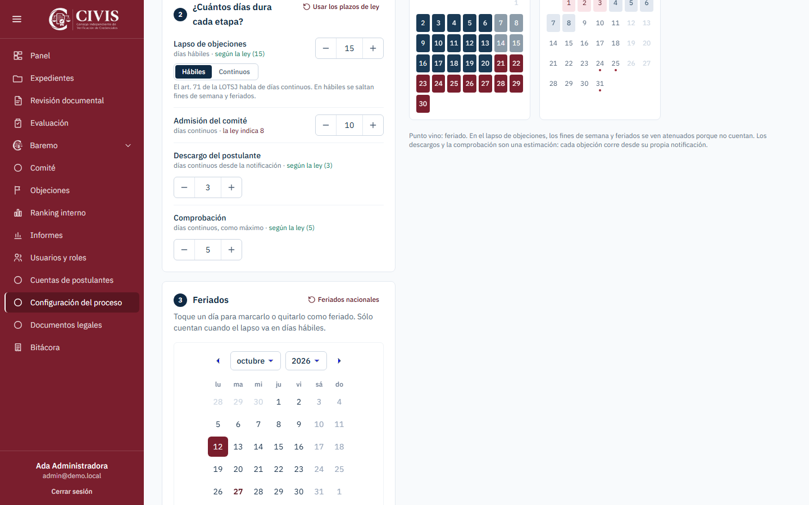
Paso 2: una etapa alargada; aparece «Usar los plazos de ley»
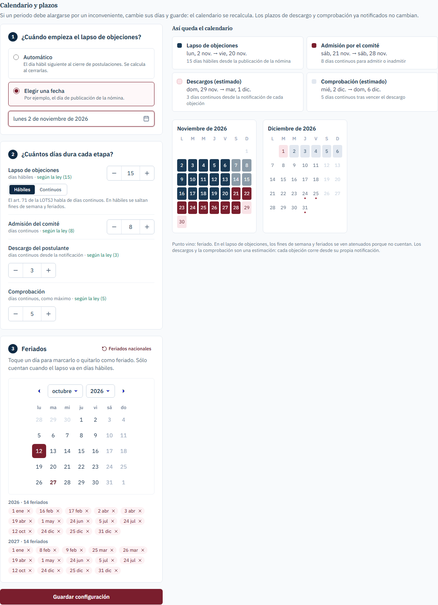
Los tres pasos y la vista previa del calendario
Cierre del lapso. El lapso de objeciones se cierra apagando los interruptores de objeciones. Si el calendario indica que ya venció y siguen abiertas, la página muestra un aviso.
12. Superadministración: Términos y Condiciones y Política de Privacidad
Superadministrador En «Documentos legales» hay una tarjeta por documento con la versión vigente, desde cuándo rige, quién la publicó, cuántos postulantes la aceptaron, su huella SHA-256 y el historial de versiones.
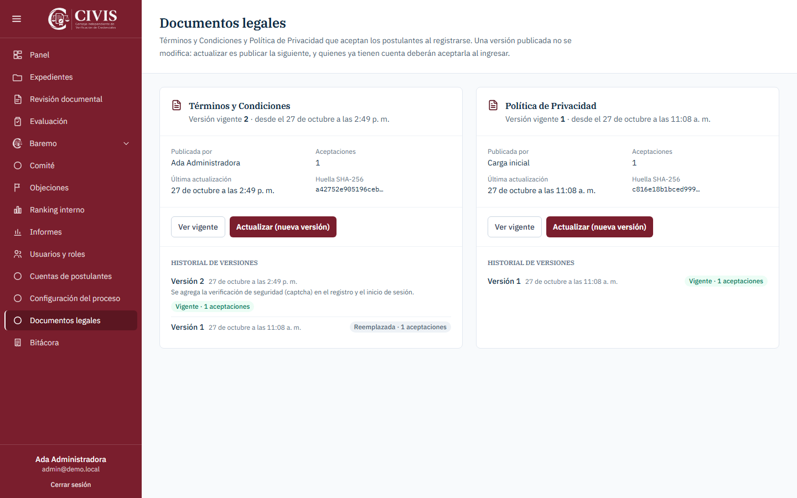
Documentos legales: versión vigente e historial
Ver la versión vigente
Pulse «Ver vigente». A la derecha se ven el estado, la versión, las fechas, quién la publicó, las aceptaciones, el resumen de cambios y la huella del texto.
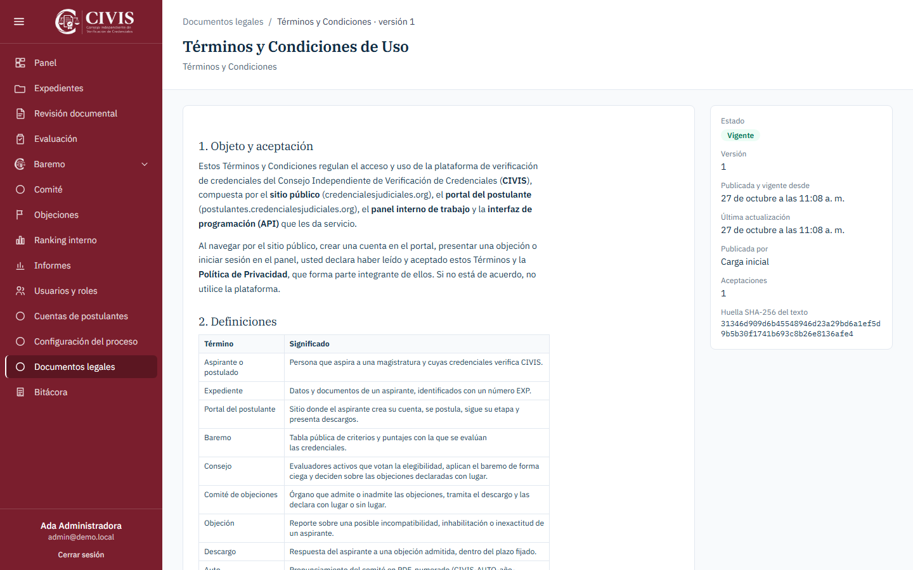
Lectura de una versión publicada
Publicar una versión nueva
Pulse «Actualizar (nueva versión)». Se crea un borrador con el texto vigente. Si ya había uno, verá «Continuar borrador».
Corrija el título y el texto en «Escribir». El texto usa formato Markdown: ## Sección, **negrita**, listas con - y tablas. Revíselo en «Vista previa».
Escriba el resumen de cambios (obligatorio desde la versión 2). Es lo que leen los postulantes en «Documentos actualizados».
Puede pulsar «Guardar borrador» y seguir otro día, o «Descartar borrador».
Pulse «Publicar versión N» y luego «Confirmar publicación».
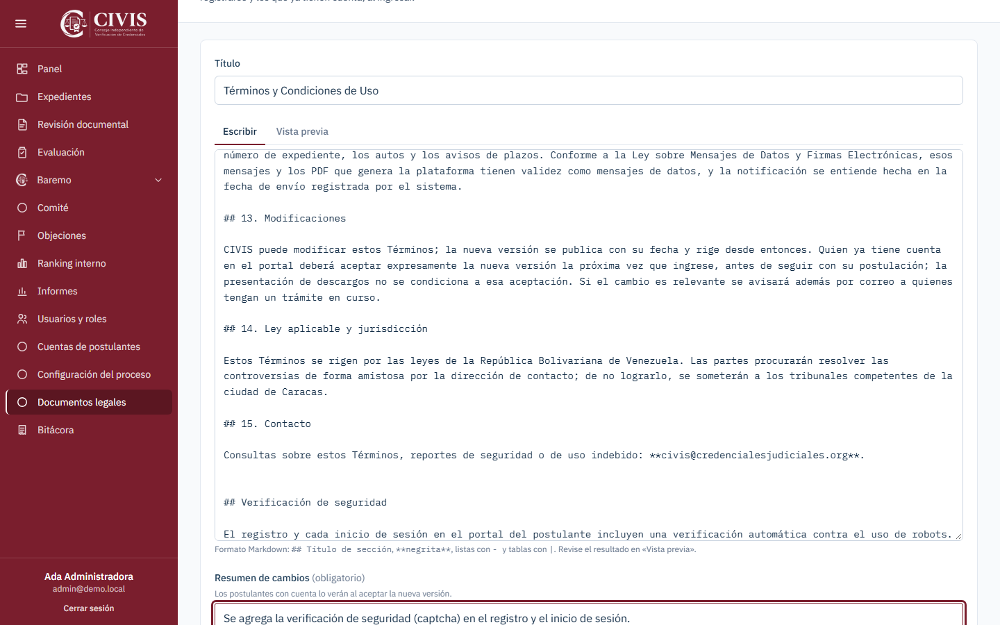
Borrador: título, texto en Markdown y resumen de cambios
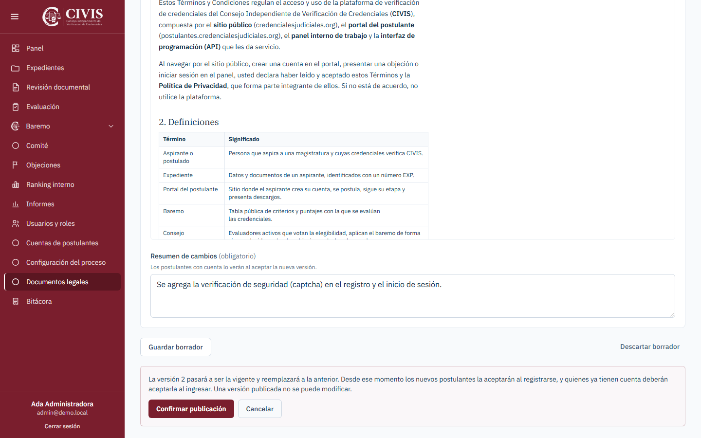
Vista previa y confirmación de la publicación
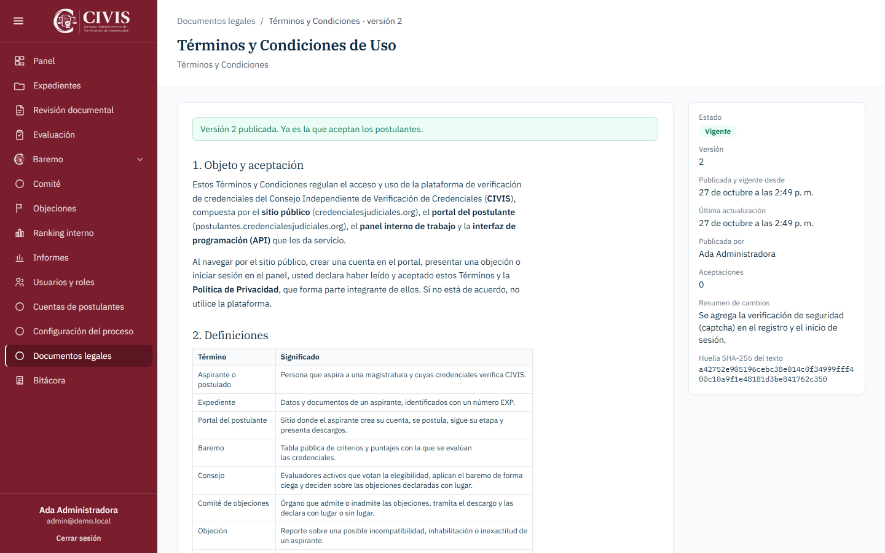
Versión publicada: ya es la que aceptan los postulantes
Una versión publicada no se modifica. La anterior pasa a «Reemplazada» y conserva sus aceptaciones. Desde la publicación, los postulantes nuevos aceptan la versión nueva al registrarse y quienes ya tienen cuenta deben aceptarla al ingresar.
13. Administración: usuarios, Consejo y cuentas de postulantes
SuperadministradorAdministrador
El Consejo
En «Usuarios y roles» → «Consejo» se ve cuántos puestos del Consejo están ocupados y quiénes lo integran. Use «Agregar al Consejo» para elegir un evaluador activo, o «Sacar del Consejo», indicando el motivo.
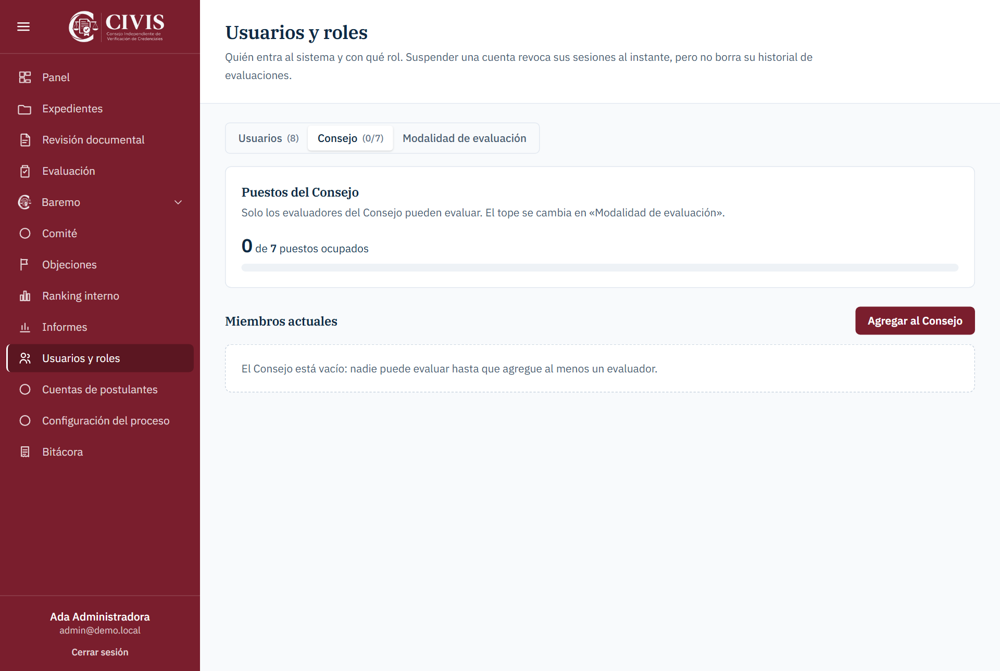
Pestaña «Consejo»
Cuentas de postulantes
Las cuentas creadas en el portal del postulante ya no aparecen en «Usuarios y roles» y nunca cambian de rol. Se consultan en «Cuentas de postulantes»: búsqueda por nombre, correo o cédula, estado de la cuenta y enlace al expediente. Desde ahí se pueden suspender o reactivar.
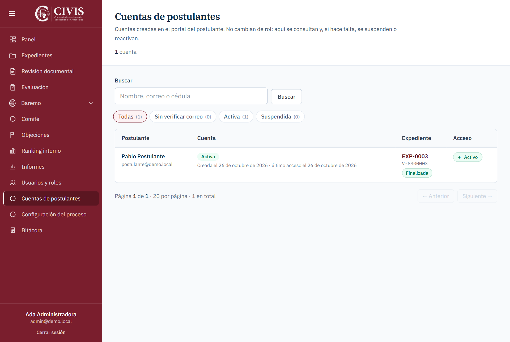
Cuentas de postulantes
Ranking público
Enviar al ranking público: sólo el superadministrador.
Actualizar una ficha publicada: el superadministrador siempre; el administrador y los evaluadores sólo si el interruptor está activo.
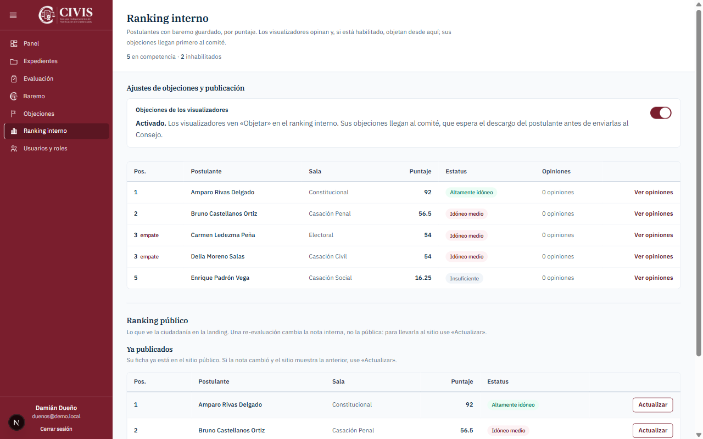
Administrador actualizando una ficha publicada
14. Recuperar la contraseña (todos los usuarios)
Funciona igual en el portal del postulante y en el panel interno.
En la pantalla de ingreso, pulse «¿Olvidó su contraseña?».
Escriba el correo de su cuenta y pulse «Enviarme un código».
Escriba el código de 6 dígitos (vence en 10 minutos) y su contraseña nueva dos veces.
Pulse «Restablecer contraseña» e ingrese con la nueva.
Al restablecerla se cierran todas sus sesiones abiertas, se quita el bloqueo por intentos fallidos y le llega un correo de aviso.
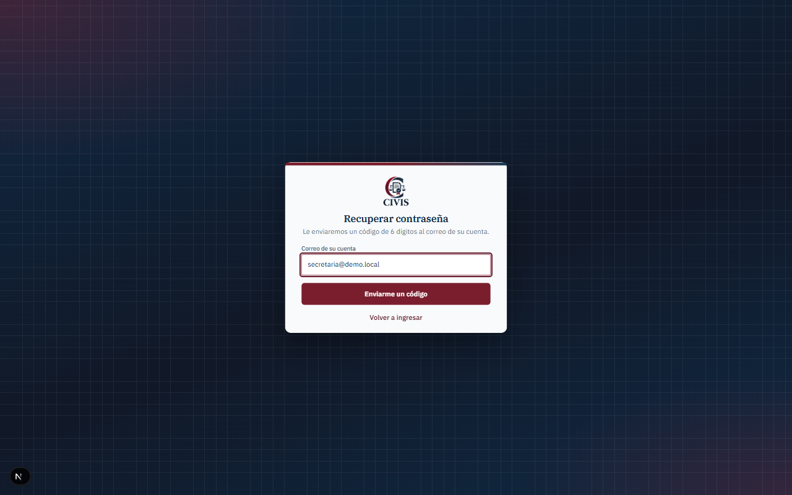
Panel: pedir el código
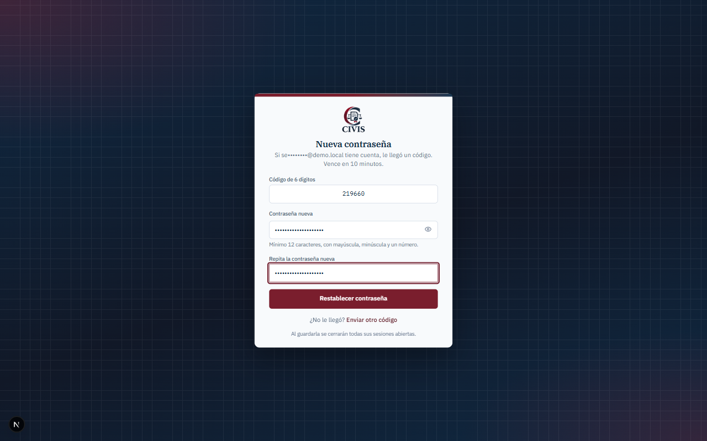
Panel: código y contraseña nueva
15. Quién puede hacer qué
Rol
Dónde entra
Qué hace
Postulante
Portal del postulante
Crear cuenta aceptando los Términos y la Política de Privacidad, aceptar sus versiones nuevas, postularse, cargar y corregir documentos, seguir su etapa, responder objeciones admitidas dentro del plazo y descargar sus autos.
Secretaría
Panel
Crear expedientes (con postulaciones abiertas), corregirlos en borrador y cargar descargos de postulantes sin cuenta.
Revisor
Panel
Revisión documental: enviar a evaluación o devolver para corrección.
Comité
Panel
Admitir o inadmitir objeciones, esperar el descargo, comprobar y decidir con lugar o sin lugar. Cada acto dicta un auto.
Evaluador (Consejo)
Panel
Evaluar y, ante una objeción con lugar, declarar la inelegibilidad o ajustar el puntaje.
Visualizador
Panel
Consultar, opinar y, con el lapso abierto, objetar.
Administrador
Panel
Usuarios, Consejo, cuentas de postulantes, interruptor de objeciones de visualizadores; actualizar el ranking público si está habilitado.
Superadministrador
Panel
Todo lo anterior más la configuración del proceso (cierre de postulaciones, interruptores, calendario y plazos) y los documentos legales.
Una cuenta de postulante no puede entrar al panel interno, y el personal no entra por el portal del postulante. La verificación de seguridad (captcha) sólo se pide en el portal del postulante.